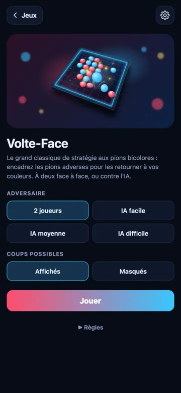
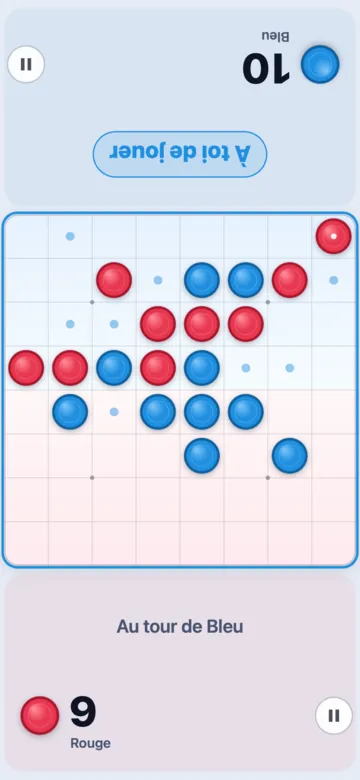
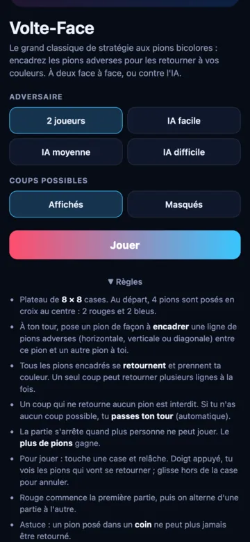

Volte-Face, le jeu de pions à retourner
Le grand classique de stratégie aux pions bicolores. Encadre les pions de l'autre couleur : ils se retournent et passent dans ton camp. Une règle qui s'apprend en une minute, des parties qui se jouent jusqu'au dernier pion.
- 1 ou 2 joueurs
- Plateau 8 × 8
- IA en 3 niveaux
- Coups possibles affichés
Twoble arrive très bientôt. L'app est gratuite.


Comment jouer à Volte-Face
Le but : avoir le plus de pions de ta couleur quand plus personne ne peut jouer.
- Plateau de 8 × 8 cases. Au départ, 4 pions sont posés en croix au centre : 2 rouges et 2 bleus.
- Rouge commence la première partie, puis on alterne d'une partie à l'autre.
- À ton tour, pose un pion de façon à encadrer une ligne de pions adverses (horizontale, verticale ou diagonale) entre ce pion et un autre pion à toi.
- Tous les pions encadrés se retournent et prennent ta couleur. Un seul coup peut retourner plusieurs lignes à la fois.
- Un coup qui ne retourne aucun pion est interdit. Si tu n'as aucun coup possible, tu passes ton tour (c'est automatique).
- La partie s'arrête quand plus personne ne peut jouer. Le plus de pions gagne.
Les trois pions bleus sont pris entre deux pions rouges : ils se retournent et deviennent rouges.
Jouer du bout du doigt
- Touche une case et relâche pour poser ton pion.
- Garde le doigt appuyé : tu vois quels pions vont se retourner avant de jouer.
- Glisse hors de la case pour annuler.
- Les petits points montrent les coups possibles. Pour plus de défi, masque-les dans les options.
- Le score de chaque joueur est tourné vers lui : à deux, chacun lit dans le bon sens.


6 conseils pour gagner à Volte-Face
Retourner beaucoup de pions tout de suite n'est pas toujours une bonne idée. Voici ce que font les bons joueurs.
1. Prends les coins
Un pion posé dans un coin ne peut plus jamais être retourné. C'est la case la plus précieuse du plateau.
2. Méfie-toi des cases voisines des coins
Y jouer trop tôt ouvre souvent le coin à l'adversaire. Attends que le coin soit pris ou sans danger.
3. Les bords sont solides
Un pion sur un bord ne peut être retourné que le long de ce bord. Il est plus dur à reprendre qu'un pion du centre.
4. Garde peu de pions au début
En début de partie, moins tu as de pions, moins l'adversaire a de coups possibles. Laisse-le se coincer.
5. Compte les coups possibles
Celui qui n'a plus de coup passe son tour, et l'autre rejoue. Prive ton adversaire de bonnes cases.
6. Tout se joue à la fin
Seuls les pions de la dernière position comptent. Une partie peut basculer dans les derniers coups.
Questions sur Volte-Face
Comment retourner des pions à Volte-Face ?
Pose un pion de façon à encadrer une ligne de pions adverses, horizontale, verticale ou diagonale, entre ce pion et un autre pion à toi. Tous les pions encadrés se retournent et prennent ta couleur.
Que se passe-t-il si je ne peux pas jouer ?
Si tu n'as aucun coup possible, tu passes ton tour automatiquement et l'adversaire rejoue. La partie s'arrête quand plus personne ne peut jouer.
Qui gagne à Volte-Face ?
Le joueur qui a le plus de pions de sa couleur sur le plateau à la fin de la partie. L'égalité est possible.
Qui commence ?
Rouge commence la première partie, puis on alterne d'une partie à l'autre.
Besoin d'action ?
Passe à l'Air Hockey : un palet, deux maillets, et le premier à 7 buts gagne.